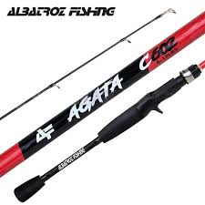

Catálogo dos Produtos
Confira as especificações e características de nossos produtos de pesca esportiva.
Varas de Pesca
Nossas varas de pesca são projetadas para oferecer resistência e sensibilidade, ideais para diversos tipos de pesca.

Modelo: Agata - Albatroz
Categoria: Varas de Pesca
Marca: Albatroz
Preço: R$ 45,99
Descrição: A Vara de Pesca Agata da Albatroz é uma excelente escolha para pescadores que buscam qualidade e desempenho. Com um design moderno e materiais de alta resistência, esta vara é ideal para diversas modalidades de pesca esportiva.
Características técnicas:
- Ação Média: Proporciona uma boa combinação entre sensibilidade e resistência, permitindo uma ótima performance em diferentes situações de pesca.
- Material em Fibra de Carbono: Garante leveza e durabilidade, facilitando o manuseio e aumentando a vida útil da vara.
- Comprimento Total de 1,83 m: Ideal para pescadores que buscam versatilidade, permitindo uma boa distância de arremesso e controle durante a pesca.
- Resistência de 12 lbs: Adequada para a captura de peixes de médio porte, oferecendo segurança e confiança durante a pescaria.
- Quantidade de guias: 6 guias estrategicamente posicionadas para garantir um fluxo suave da linha e reduzir o atrito durante os arremessos.
- Quantidade de partes destacáveis: 2 partes destacáveis para facilitar o transporte e armazenamento da vara.